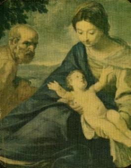

DESAPARECIMENTO
DE JESUS
 Quando JESUS completou 12 anos
de idade, foi levado ao Templo em
Quando JESUS completou 12 anos
de idade, foi levado ao Templo em  Jerusalém pelos seus pais, para a celebração de sua
primeira Páscoa. De acordo com o costume e a lei judaica,
quando os jovens completavam a idade de 12 anos, tanto
para as moças como para os rapazes, atingiam
a maioridade. As moças ficavam legalmente habilitadas a se
casarem e os rapazes tornavam-se cidadãos judeus.
Jerusalém pelos seus pais, para a celebração de sua
primeira Páscoa. De acordo com o costume e a lei judaica,
quando os jovens completavam a idade de 12 anos, tanto
para as moças como para os rapazes, atingiam
a maioridade. As moças ficavam legalmente habilitadas a se
casarem e os rapazes tornavam-se cidadãos judeus.
Terminada a solenidade
da Páscoa, todos regressavam aos seus lares como habitualmente
acontecia. Entretanto, sem que ninguém observasse, JESUS não
embarcou na caravana. Durante a viagem, embora José e Maria
sentissem a ausência DELE, como a caravana era grande, constituída
por diversas famílias amigas e conhecidas, imaginaram que ELE
estivesse em alguma parte da caravana, atendendo alguma
necessidade ou exercitando a grandeza de sua bondade que dominava
o seu coração. Todavia, no final do primeiro dia de viagem, quando
a caravana alcançou o local previamente combinado para acamparem
e passarem a noite, José e Maria ficaram preocupados, porque ELE
não apareceu como de costume, para ajudá-los a montar a barraca
e fazer os preparativos para as acomodações onde iam dormir. Cheios
de aflições procuraram JESUS em todas as outras barracas...
Ninguém tinha notícias DELE!... Repletos de dúvidas e
angustiados pela ausência do Filho querido, não puderam dormir,
passaram a noite imaginando o que poderia ter acontecido. Decidiram
voltar. No dia seguinte, logo cedo, aprontaram os animais e voltaram à
Jerusalém. Chegaram ao anoitecer e logo fizeram as primeiras
buscas. Mas cansados e com muito sono deixaram para procurá-lo
no dia seguinte. Na manhã do terceiro dia encontraram JESUS no
Templo ensinando e dando autênticas explicações das Sagradas
Escrituras, aos doutores da Lei.
Verdadeiramente, esta foi a única manifestação
da Natureza Divina de JESUS registrada na Bíblia, antes DELE
iniciar a Vida Pública aos 30 anos de idade.
Indubitavelmente
foi um acontecimento marcante. José e Maria encontraram JESUS
ensinando aos doutores da lei no Templo. Admirados, mas
desgastados e cansados pela noite mal dormida, pelo cansaço
da viagem e a falta de notícias do Filho, Maria inquiriu JESUS
a respeito de Seu procedimento. José, apesar de preocupado,
apenas trocou um olhar triste com o Filho, mas não disse nenhuma
palavra, como também não LHE fez qualquer censura ou gesto
de reprovação. JESUS, entendeu as palavras de "seus pais" e
obedientemente os acompanhou e retornaram a Nazaré.(Lc 2,41-50)

CARÁTER DE JOSÉ
 Na verdade, era assim que José se conduzia em
todas as ocasiões, inclusive nas mais difíceis.
Na verdade, era assim que José se conduzia em
todas as ocasiões, inclusive nas mais difíceis. 
Nenhuma palavra e nenhum gesto. Apenas um olhar que
revelava preocupação, seus cuidados, o sofrimento interior, sua aflição e
sobretudo, um misericordioso olhar invocando o bem-estar do filho.
Este procedimento estava alicerçado numa imensa confiança na Providência
Divina e por isso mesmo, não eram necessários os seus gestos e nem as
suas palavras de reprovação. Também é por isso que não se
encontra nas Sagradas Escrituras qualquer frase pronunciada por
ele, em qualquer tipo de ocorrência ou numa manifestação de
amor, atestando com o seu "silêncio", uma
entrega total nas mãos de DEUS. Deixou transparente que não eram necessários
qualquer pedido ou qualquer outra palavra de explicação diante do
CRIADOR. José nos ensina, que no viver cotidiano cada pessoa
deve procurar cumprir conscientemente a sua parte na vida, sem nada
questionar e não se preocupar em conhecer detalhes dos
acontecimentos. O SENHOR DEUS tudo acompanha e está
presente em todas ocorrências, jamais se omite diante de um
filho que necessita de seu Divino favor para solucionar uma dificuldade
ou qualquer tipo de problema. Por essa razão, ele silenciosamente
aceitava tudo e obedecia com presteza a voz da razão, muito
embora em diversas ocasiões o seu coração ficasse pequenino de
dor, premido e pressionado por uma angustiante expectativa, como
por exemplo no desaparecimento de JESUS, seu Filho. Este santo
e heróico proceder, manteve imutável ao longo de toda a sua vida.
Em virtude de tal
conduta, a Igreja chama São José de "o Justo", que
quer significar o procedimento equilibrado de um homem, responsável,
discreto, cultivador e respeitador do direito das pessoas e de uma
singular expressão de amor a DEUS: "o seu profundo e sincero silêncio".
MORTE

 Em vida não intercedeu junto ao CRIADOR
suplicando alguma cura ou milagre, da mesma forma que também
nunca profetizou. Era um homem simples e leal, dedicado ao seu
trabalho e a sua família. Pela exuberância de seu afeto podemos
imaginá-lo tantas e tantas vezes embalando o MENINO JESUS
em seus braços para que ELE adormecesse ou pelo prazer de
proporcionar-lhe um carinho paterno. Também nas situações
de perigo e de expectativa, podemos imaginá-lo segurando as
mãos de Maria, infundindo-lhe coragem, revelando um sentimento
de proteção, ou em companhia dela, em orações ao CRIADOR,
pedindo auxílio e inspiração para ultrapassarem alguma
dificuldade do cotidiano. E por todas estas suposições, evidencia-se
a força e o poder do amor sincero, que desabrocha e opera de maneira
admirável, quando a família é unida e caminha com o SENHOR.
Esta realidade ainda nos leva a imaginar a felicidade de José, deitado
nos braços de JESUS e de Maria, os grandes amores de sua vida,
recebendo o conforto e a ternura na sua "hora derradeira", quando finalmente concluída a sua missão
existencial partiu para a eternidade, para os braços afetuosos
do ETERNO PAI.
Em vida não intercedeu junto ao CRIADOR
suplicando alguma cura ou milagre, da mesma forma que também
nunca profetizou. Era um homem simples e leal, dedicado ao seu
trabalho e a sua família. Pela exuberância de seu afeto podemos
imaginá-lo tantas e tantas vezes embalando o MENINO JESUS
em seus braços para que ELE adormecesse ou pelo prazer de
proporcionar-lhe um carinho paterno. Também nas situações
de perigo e de expectativa, podemos imaginá-lo segurando as
mãos de Maria, infundindo-lhe coragem, revelando um sentimento
de proteção, ou em companhia dela, em orações ao CRIADOR,
pedindo auxílio e inspiração para ultrapassarem alguma
dificuldade do cotidiano. E por todas estas suposições, evidencia-se
a força e o poder do amor sincero, que desabrocha e opera de maneira
admirável, quando a família é unida e caminha com o SENHOR.
Esta realidade ainda nos leva a imaginar a felicidade de José, deitado
nos braços de JESUS e de Maria, os grandes amores de sua vida,
recebendo o conforto e a ternura na sua "hora derradeira", quando finalmente concluída a sua missão
existencial partiu para a eternidade, para os braços afetuosos
do ETERNO PAI.
Ele provavelmente faleceu
quando JESUS tinha 30 anos de idade, isto porque, a partir desta época
o Novo Testamento não faz mais nenhuma referência a José.
UM
SANTO ESPECIAL 
Por ter sido um homem autêntico,
correto e perseverante no cumprimento de todas as responsabilidades,
sobretudo na fidelidade ao SENHOR, hoje é venerado por sua
grande amizade e pelo seu imenso
amor a DEUS, que lhe dá um notável poder de intercessão.
Como resultado, São José tem-se mostrado pródigo e generoso
em sua obra intercessora, atendendo aos mais diversos
e variados pedidos, conseguindo do CRIADOR graças admiráveis,
que tem deixado a humanidade embevecida e extasiada, com o seu
maravilhoso e eficaz poder de mediação. Os Papas muito tem
feito para estabelecer e divulgar com destaque o seu culto na
Igreja, reconhecendo a eficácia de sua intercessão e a força
de seu exemplo para os fieis. É protetor da Igreja, das
famílias, principalmente daquelas que lutam para imitar a Sagrada
Família, é também protetor de muitos Institutos e Congregações
Religiosas que aspiram a perfeição cristã, é protetor das
Vocações Sacerdotais, é também protetor dos operários e trabalhadores
em geral, assim como é patrono dos moribundos, daqueles que
estão com a viagem marcada para a eternidade. Sua Festa é
comemorada pela Cristandade no dia 19 de Março, desde
o ano 1621.
Para comunicar conosco, utilizar os E-mails abaixo:
E-mail = jfnovaes@hotmail.com
E-mail =
apostoladosagradoscoracoes@hotmail.com
PRÓXIMA
PÁGINA 
 PÁGINA
ANTERIOR
PÁGINA
ANTERIOR
RETORNA
AO ÍNDICE